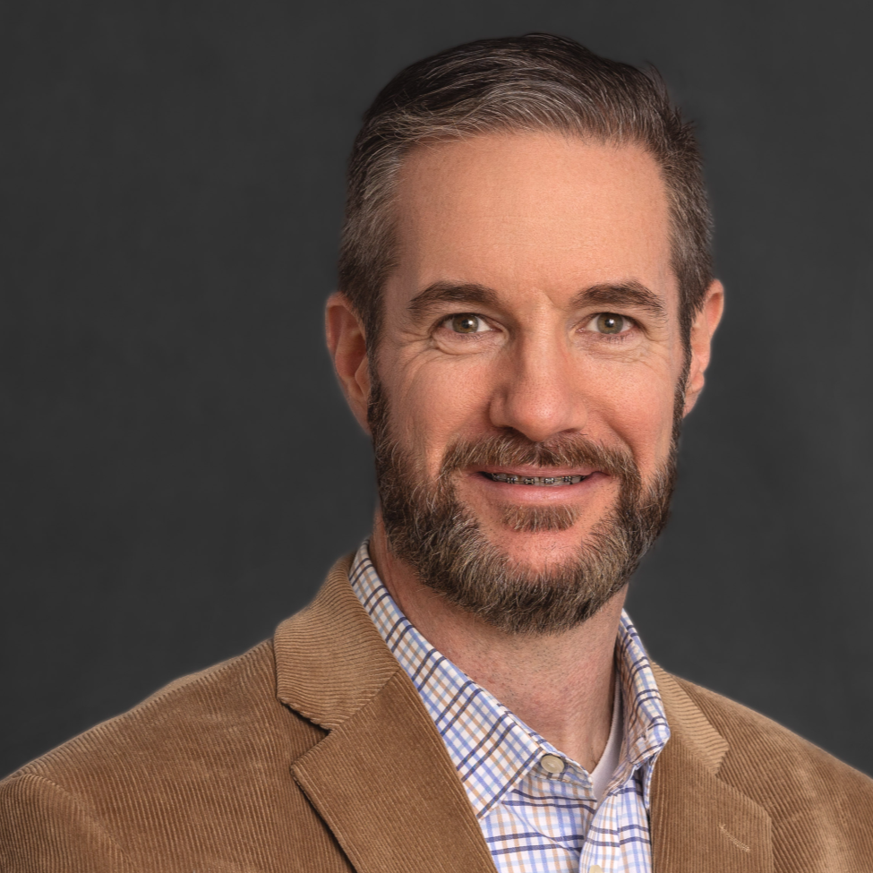

Brian T Smith 
Summary
13+ years of Quality Assurance hands-on and leadership experience in software development of both
web-based and standalone applications. Direct involvement through the entire SDLC, comfortable
using both Agile and Waterfall methodologies, focusing heavily on the identification and documentation
of test cases early in the design phase. Working closely with product resources, development and
devops helping to ensure the smooth delivery of products with minimal defects. Passion for learning
and simplifying processes with automation and scripting. Extensive experience in both the financial
and insurance industries.
Work experience
Haven Technologies, Oct 2016 - Aug 2023 Senior QA Engineer
- Certified projects spanning different web applications and layers,
including presentation, business, data access, database and 3rd party
integrations, ensuring quality of releases as well as increasing
regression coverage.
-
Created API testing scripts, ensuring external API exceeded the
client's quality, stability and performance requirements.
-
Authored and executed test plans, requirement documentation and
test cases to identify issues and the underlying causes.
-
Evaluated tools and frameworks used in improving QA process,
resulting in a 50% reduction in the required time for regression
testing cycles.
-
Recruited, trained and mentored QA Engineers, including feedback
used for performance reviews in both local and remote settings.
-
Maintained testing environments used by multiple resources, ensuring
availability, proper updates were performed and multiple application
builds deployed properly.
OpenLink Financial, Nov 2010 - Sep 2016 Senior QA Engineer
-
Created and maintained both manual and automated regression test
cases, based on functional requirements.
-
Executed technical upgrade testing on client databases to identify
resolutions of both code defects and data corruption.
-
Coordinated client delivery expectations with multiple departments.
-
Trained QA resources, both onsite and offshore, in areas ranging from
application functionality, financial instruments and regulatory
requirements, database management and internal testing procedures and
framework.
-
Collaborated with agile teams to assist in the identification,
resolution and testing of new functionality as well as previously
identified defects.
-
Developed a framework to support new custom WinForms and WPF application
in .NET 3.5 using custom solution and plugins to support object recognition
of custom controls.
-
Managed client side-by-side visits from the planning stage to engagement,
ensuring the availability of testing environments, reviewing test plans
and documentation of issues.
MetLife, Sep 2007 - Oct 2010 Operations Manager
-
Supported office of 125 insurance agents.
-
Developed internal procedures and documentation for use in training and
continuing education.
-
Oversaw relocation of offices to ensure seamless transition and 100%
functionality.
-
Recruited, trained, and managed operations staff.
-
Managed large-scale hardware upgrades including ordering, inventory,
data migration and reclamation.
Skills
OS: Windows and Unix
Database: Postgres, MSSQL, Oracle
Applications/Tools: Selenium, Cypress, Postman, Git, AWS, Docker, Kubernetes, Jira, DevTrack, TestRails
Education
University of Phoenix, Bachelor of Science, Information Technology Software Engineering
University of Phoenix, Associate of Arts, Information Technology Database Development
Certifications
- Microsoft Certified Professional, 2003
- ComTIa A+ Certified, 2003
- FINRA Series 7, 8, 9, and 63 Securities Licenses (Expired)
- Florida Life, Variable Annuity and Health Insurance (Expired)
Contact Me
About Me